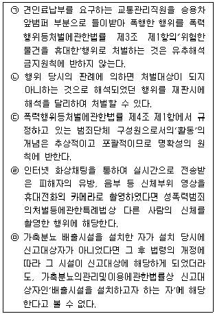
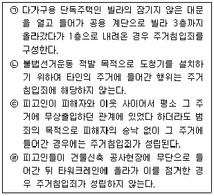
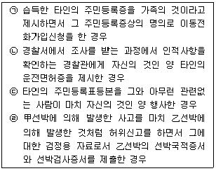

경찰공무원(순경)-형법 (2015-02-14 기출문제)
1. 죄형법정주의에 관한 다음 설명 중 옳고 그름의 표시(0, X)가 바르게 된 것은? (다툼이 있으면 판례에 의함)

- ㉠ (O), ㉡ (O), ㉢ (X) ㉣ (X), ㉤ (O)
- ㉠ (O), ㉡ (O), ㉢ (O) ㉣ (X), ㉤ (O)
- ㉠ (X), ㉡ (O), ㉢ (X) ㉣ (O), ㉤ (X)
- ㉠ (O), ㉡ (X), ㉢ (X) ㉣ (X), ㉤ (O)
(정답률: 86%)

2. 법인의 범죄능력과 양벌규정에 관한 다음 설명 중 가장 적절하지 않은 것은? (다툼이 있으면 판례에 의함)
- 형사범에 대해서는 법인의 범죄능력을 부정하고, 행정범에 대해서는 법인의 범죄능력을 긍정하는 견해는 법인의 범죄능력에 관한 부분적 긍정설(절충설)의 입장이다.
- 법인이 처리할 의무를 지는 타인의 사무에 관하여는 법인이 배임죄의 주체가 될 수는 없고 그 법인을 대표하여 사무를 처리하는 자연인인 대표기관이 바로 타인의 사무를 처리하는 자 즉 배임죄의 주체가 된다.
- 양벌규정이 있는 경우에는 당해 양벌규정에 법인격 없는 사단이나 재단이 명시되어 있지 않더라도 그 법인격 없는 사단이나 재단에 양벌규정을 적용할 수 있다.
- 지방자치단체가 그 고유의 자치사무를 처리하는 경우 지방자치단체는 국가기관의 일부가 아니라 국가기관과는 별도의 독립한 공법인으로서 양벌규정에 의한 처벌대상이 되는 법인에 해당한다.
(정답률: 79%)
3. 인과관계에 관한 다음 설명 중 가장 적절하지 않은 것은? (다툼이 있으면 판례에 의함)
- 어떤 행위라도 죄의 요소되는 위험발생에 연결되지 아니한 때에는 그 결과로 인하여 벌하지 아니한다.
- 과실범에서는 미수가 성립될 여지가 없으므로 인과관계를 논할 실익이 없다.
- 甲이 주먹으로 피해자의 복부를 1회 강타하였는데, 이로 인하여 피해자는 장파열이 되어 병원에 입원하였다. 그런데 의사 乙의 과실에 의한 수술지연이 공동원인이 되어 피해자가 사망한 경우 甲의 상해행위와 피해자의 사망 사이에는 인과관계가 인정된다.
- 甲은 부동산 대지에 대한 전매사실을 숨기고 지주명의로 위장하여 학교법인 乙과 대지에 관한 매매계약을 체결하였으나 그 이행에 아무런 영향이 없었다. 이 경우 피고인들의 위 기망행위와 위 법인의 처분행위 사이에는 인과관계가 없다.
(정답률: 80%)
4. 정당방위에 관한 다음 설명 중 가장 적절하지 않은 것은? (다툼이 있으면 판례에 의함)
- 정당방위의 성립요건으로서의 방어행위는 순수한 수비적 방어뿐 아니라 적극적 반격을 포함하는 반격방어의 형태도 포함한다.
- 정당방위에 있어서는 반드시 방위행위에 보충의 원칙은 적용되지 않으나 방위에 필요한 한도 내의 행위로서 사회윤리에 위배되지 않는 상당성이 있는 행위임을 요한다.
- 서로 공격할 의사로 싸우다가 먼저 공격을 받고 이에 대항하여 가해하게 된 경우 그 가해행위는 정당방위가 될 여지는 없으나 과잉방위가 될 수는 있다.
- 이혼소송중인 남편이 찾아와 가위로 폭행하고 변태적 성행위를 강요하는 데에 격분하여 처가 칼로 남편의 복부를 찔러 사망에 이르게 한 경우는 정당방위나 과잉방위에 해당되지 않는다.
(정답률: 74%)
5. 심신장애에 관한 다음 설명 중 가장 적절하지 않은 것은? (다툼이 있으면 판례에 의함)
- 형법 제10조에 규정된 심신장애의 유무 및 정도의 판단은 사실적 판단으로서 반드시 전문감정인의 의견에 기속되어야 하는 것은 아니다.
- 정신적 장애가 있는 자라고 하여도 범행 당시 정상적인 사물판별능력 또는 행위통제능력이 있었다면 심신장애로 볼 수 없다.
- 무생물인 옷 등을 성적 각성과 희열의 자극제로 믿고 이를 성적 흥분을 고취시키는 데 쓰는 성주물성애증이라는 정신질환이 있다고 하더라도 그러한 사정만으로는 절도 범행에 대한 형의 감면사유인 심신장애에 해당한다고 볼 수 없다.
- 음주운전을 할 의사를 가지고 음주 만취한 후 운전을 결행하여 교통사고를 일으킨 경우 피고인은 음주시에 교통사고를 일으킬 위험성을 예견하였는데도 자의로 심신장애를 야기한 경우에 해당하므로 형법 제10조 제3항에 의하여 심신장애로 인한 감경 등을 할 수 없다.
(정답률: 60%)
6. 형법상 착오에 관한 다음 설명 중 가장 적절하지 않은 것은? (다툼이 있으면 판례에 의함)
- 불능미수의 문제는 사실의 착오가 반전된 경우이지만, 환각범의 문제는 법률의 착오가 반전된 경우이다.,
- 일반인이 현행범인을 체포하여 48시간 동안 감금하는 것이 허용되는 것으로 착오하고 감금하였더라도 책임설에 의하면 감금죄의 고의는 인정된다.
- 공무원이 그 직무에 관하여 실시한 봉인 등의 표시를 손상 또는 은닉 기타의 방법으로 그 효용을 해함에 있어서 그 봉인 등의 표시가 법률상 효력이 없다고 믿은 경우, 그와 같이 믿은 데에 정당한 이유가 없는 이상 공무상표시무효죄의 죄책을 면할 수 없다.
- 산모가 자기가 분만한 적출영아를 사생아로 오인하고 치욕을 은폐하기 위하여 분만 직후 살해한 경우는 보통살인죄로 처벌된다.
(정답률: 78%)
7. 미수범에 관한 다음 설명 중 가장 적절한 것은? (다툼이 있으면 판례에 의함)
- 금품을 절취할 생각으로 타인의 주머니에 몰래 손을 넣은 경우는 비록 그 주머니 속에 실제로 금품이 들어있지 않았더라도 절도미수죄를 구성한다.
- 일반적으로 사람에게 공포심을 일으킬 수 있는 정도의 해악의 고지가 상대방에게 도달하여 상대방이 그 의미를 인식했지만 현실적으로 공포심을 일으키지 않은 경우는 협박미수죄를 구성한다.
- 주거침입의 고의로 야간에 타인의 집 창문을 열고 집 안으로 얼굴을 들이민 것만으로는 사실상 주거의 평온을 해하였더라도 주거침입미수죄를 구성한다.,
- 금융기관 직원이 전산단말기를 이용하여 다른 공범들이 지정한 특정계좌에 돈이 입금된 것처럼 허위의 정보를 입력하는 방법으로 위 계좌로 입금되도록 한 경우, 그 후 그러한 입금이 취소되어 현실적으로 인출되지 못한 경우는 컴퓨터등사용사기미수죄를 구성한다.
(정답률: 77%)
8. 교사범에 관한 다음 설명 중 가장 적절하지 않은 것은? (다툼이 있으면 판례에 의함)
- 교사자의 교사행위에도 불구하고 피교사자가 범행을 승낙하지 아니하거나 피교사자의 범행결의가 교사자의 교사행위에 의하여 생긴 것으로 보기 어려운 경우에는 이른바 실패한 교사로서 형법 제31조 제3항에 의하여 교사자를 음모 또는 예비에 준하여 처벌할 수 있을 뿐이다.
- 교사범이 공범관계로부터 이탈하기 위해서는 피교사자가 범죄의 실행행위에 나아가기 전에 교사범에 의하여 형성된 피교사자의 범죄 실행의 결의를 해소하는 것이 필요하다.
- 당초의 교사행위에 의하여 형성된 피교사자의 범죄 실행의 결의가 더 이상 유지되지 않는 것으로 평가할 수 있다면, 설사 그 후 피교사자가 범죄를 저지르더라도 이는 당초의 교사행위에 의한 것이 아니라 새로운 범죄 실행의 결의에 따른 것이므로 교사자는 형법 제31조 제2항에 의한 죄책을 부담함은 별론으로 하고 형법 제31조 제1항의 교사범으로서의 죄책을 부담하지는 않는다.
- 교사범이 성립하기 위해서는 교사자가 피교사자에게 범행의 일시, 장소, 방법 등의 세부적인 사항까지를 특정하여 교사하여야 한다.
(정답률: 84%)
9. 집행유예에 관한 다음 설명 중 가장 적절하지 않은 것은? (다툼이 있으면 판례에 의함)
- 집행유예시 받은 사회봉사명령 또는 수강명령은 집행유예기간 내에 집행한다.
- 형의 집행유예를 선고받은 사람이 형법 제65조에 의하여 그 선고가 실효 또는 취소됨이 없이 정해진 유예기간을 무사히 경과하여 형의 선고가 효력을 잃게 되었더라도 이는 형의 선고의 법률적 효과가 없어진다는 것일 뿐, 형의 선고가 있었다는 기왕의 사실 자체까지 없어지는 것은 아니므로 형법 제59조 제1항 단행에서 정한 선고유예 결격사유인'자격정지 이상의 형을 받은 전과가 있는 자'에 해당한다고 보아야 한다.
- 집행유예 선고를 받은 자가 유예기간 중 고의로 범한 죄로 금고 이상의 실형을 선고받아 그 판결이 확정된 때에는 집행유예의 선고를 취소할 수 있다.,
- 하나의 자유형 중 일부에 대해서는 실형을, 나머지에 대해서는 집행유예를 선고하는 것은 허용되지 않는다.
(정답률: 49%)
10. 살인죄에 관한 다음 설명 중 가장 적절하지 않은 것은? (다툼이 있으면 판례에 의함)
- 제왕절개 수술의 경우'의학적으로 제왕절개 수술이 가능하였고 규범적으로 수술이 필요하였던 시기'를 분만의 시기로 볼 수 없다.
- 사람을 살해한 다음 이를 은폐하기 위하여 사체를 유기한 경우에는 살인죄와 사체유기죄의 경합범에 해당한다.
- 강도가 베개로 피해자의 머리부분을 약 3분간 누르던 중 피해자가 저항을 멈추고 사지가 늘어졌음에도 계속 눌러 사망하게 한 경우 살인죄의 고의가 인정되지 않는다.
- 간첩이 간첩행동을 저해하는 자를 살해할 의도로 권총을 휴대하고 남하하였다 하더라도 살해대상인물이 결정되지 않은 이상 살인 예비죄로 처단할 수 없다.
(정답률: 87%)
11. 강제추행죄에 관한 다음 설명 중 가장 적절하지 않은 것은? (다툼이 있으면 판례에 의함)
- 초등학교 4학년 담임교사(남자)가 교실에서 자신이 담당하는 반의 남학생의 성기를 만진 행위는 미성년자의제강제추행죄에서 말하는'추행'에 해당한다.
- 피고인이 甲에게 정신장애가 있음을 알면서 인터넷 쪽지를 이용하여 甲을 피고인의 집으로 유인한 후 성교행위와 제모행위를 한 경우, 구 성폭력범죄처벌특례법에서 정한 장애인에 대한 위계에 의한 간음죄 또는 추행죄에 해당한다.
- 피고인이 알고 지내던 여성이 자신의 머리채를 잡아 폭행을 가하자 보복의 의미에서 여성의 입술, 귀, 유두, 가슴 등을 입으로 깨무는 등의 행위를 한 경우는 강제추행죄의'추행'에 해당한다.
- 단순히 피고인이 바지를 벗어 자신의 성기를 보여준 것만으로는 폭행 또는 협박으로'추행'을 하였다고 볼 수 없다.
(정답률: 71%)
12. 명예훼손죄에 관한 다음 설명 중 가장 적절한 것은? (다툼이 있으면 판례에 의함)
- 신문기자에게 경쟁자의 명예를 훼손하는 내용의 사실을 알려주었으나 신문기자는 기사거리가 넘쳐 이를 기사화하지 않은 경우 출판물에 의한 명예훼손죄의 미수범이 성립한다.
- 개인 블로그의 비공개 대화방에서 상대방으로부터 비밀을 지키겠다는 말을 듣고 일대일로 대화하였다고 하더라도, 그 사정만으로 대화 상대방이 대화내용을 불특정 또는 다수에게 전파할 가능성이 없다고 할 수 없으므로 공연성을 인정할 여지가 있다.
- 진실인 사실을 공연히 유포하여 타인의 신용을 훼손한 경우 명예훼손죄와 신용훼손죄의 상상적 경합범이 성립한다.
- 지방의회 선거를 앞두고 현역 시의회의원이 후보자가 되려는 자에 대해서 특별한 친분관계도 없는 한사람 한사람에게 비방의 말을 한 경우라면 공연성이 없다.
(정답률: 80%)
13. 주거침입죄에 관한 다음 설명 중 옳은 것은 모두 몇 개인가? (다툼이 있으면 판례에 의함)

- 1개
- 2개
- 3개
- 4개
(정답률: 72%)
14. 친족상도례에 관한 다음 설명 중 가장 적절한 것은? (다툼이 있으면 판례에 의함)
- 사돈지간인 자를 기망하여 재물을 편취한 경우에 대해서는 친족상도례가 적용된다.
- 친족관계에 있는 자에 대해 흉기를 휴대해서 공갈죄를 범한 경우에 대해서는 친족상도례가 적용된다.
- 특정경제범죄가중처벌등에관한법률에는 형법상의 친족상도례의 규정을 준용하는 규정이 없으므로 동법률 제3조 제1항에 의해 가중처벌되는 사기죄의 경우에는 친족상도례가 적용되지 아니한다.
- 횡령범인이 피해물건의 소유자와 위탁자 중 한쪽과 친족관계가 있는 경우에 대해서도 친족상도례가 적용된다.
(정답률: 76%)
15. 강도죄에 관한 다음 설명 중 가장 적절한 것은? (다툼이 있으면 판례에 의함)
- 甲과 乙, 丙이 타인의 재물을 절취하기로 공모한 다음 甲은 망을 보고 乙과 丙이 재물을 절취한 다음 달아나려다가 피해자에게 발각되자 체포를 면탈할 목적으로 피해자를 때려 상해를 입혔다면 甲도 이를 전혀 예견하지 못했다고 볼 수 없어 강도치상죄의 죄책을 면할 수 없다.
- 피고인이 술집 운영자 甲으로부터 술값의 지급을 요구받자 술값의 지급을 면하기로 마음먹고 甲을 유인ㆍ폭행하고 도주함으로써 술값의 지급을 면하여 재산상 이득을 취득한 경우 준강도죄가 성립하지 아니한다.
- 피고인들이 피해자들의 재물을 강취한 후 그들을 살해할 목적으로 현주건조물에 방화하여 사망에 이르게 한 경우, 피고인들의 행위는 강도살인죄와 현주건조물방화치사죄에 모두 해당하고 그 두 죄는 실체적 경합범 관계에 있다
- 피고인 甲, 乙이 공모하여 채무를 면탈할 의사로 채권자 丙을 살해한 사안에서, 甲의 丙에 대한 채무의 존재가 명백할 뿐만 아니라 丙의 상속인이 존재하고 그 상속인에게 채권의 존재를 확인할 방법이 확보되어 있지만 재산상 이익이 채권자 측으로부터 甲 앞으로 이전되었다고 볼 수 있으므로 강도살인죄가 성립한다.
(정답률: 69%)
16. 사기죄에 관한 다음 설명 중 가장 적절하지 않은 것은? (다툼이 있으면 판례에 의함)
- 수입소고기를 사용하는 식당영업주가 한우만을 취급한다는 취지의 상호를 사용하고 식단표 등에도 한우만을 사용한다고 기재한 경우는 사기죄의 기망행위에 해당한다.
- 허위의 증거를 이용하지 않더라도 허위의 내용으로 지급명령을 신청하여 지급명령이 확정된 경우에는 사기죄가 성립한다.
- 피고인들이 타인과 공모하여 그 공모자를 상대로 제소한 경우나 피고인들이 법원을 기망하여 얻으려고 한 판결의 내용이 소송 상대방의 의사에 부합하는 것일 때에는 착오에 의한 재물의 교부행위가 있다고 할 수 없어 소송사기죄가 성립되지 아니한다.
- 타인의 폭행으로 상해를 입고 병원에서 치료를 받으면서 상해를 입은 경위에 관하여 거짓말을 하여 국민건강보험관리공단으로부터 보험급여 처리를 받은 경우 위 상해가 '전적으로 또는 주로 피고인의 범죄행위에 기인하여 입은 상해'라고 할 수 없다고 하더라도 사기죄는 성립한다.
(정답률: 73%)
17. 횡령죄에 관한 다음 설명 중 가장 적절하지 않은 것은? (다툼이 있으면 판례에 의함)
- 원래 사립학교의 교비회계에 속하는 자금으로 지출할 수 있는 항목에 관한 차입금을 상환하기 위하여 교비회계 자금을 지출한 경우 횡령죄가 성립한다.
- 주상복합상가의 매수인들로부터 우수상인 유치비 명목으로 금원을 납부받아 보관하던 중 그 용도와 무관하게 일반경비로 사용한 경우 횡령죄가 성립한다.,
- 임야의 진정한 소유자와는 전혀 무관하게 신탁자로부터 임야지분을 명의신탁받아 지분이전등기를 경료한 수탁자가 신탁받은 지분을 임의로 처분한 경우 횡령죄가 성립하지 아니한다.
- 보험을 유치하면서 특별이익 제공과는 무관한 통상적인 실적급여로서의 시책비를 지급 받아 그 중 일부를 개인적인 용도로 사용한 경우 횡령죄가 성립하지 아니한다.
(정답률: 63%)
18. 장물죄에 관한 다음 설명 중 가장 적절하지 않은 것은? (다툼이 있으면 판례에 의함)
- 장물죄에 있어서 본범의 행위에 관한 법적 평가는 그 행위에 대하여 우리 형법이 적용되지 아니하는 경우에도 우리 형법을 기준으로 하여야 한다.
- 장물인 귀금속의 매도를 부탁받은 피고인이 그 귀금속이 장물임을 알면서도 매매를 중개하고 매수인에게 이를 전달하려다가 매수인을 만나기 전에 체포되었다면 장물알선죄가 성립하지 아니한다.
- 장물인 정을 모르고 장물을 보관하였다가 그 후에 장물인 정을 알게 된 경우 그 정을 알고서도 이를 계속하여 보관하는 행위는 장물죄를 구성하는 것이나, 이 경우에도 점유할 권한이 있는 때에는 이를 계속 보관하더라도 장물보관죄가 성립하지 않는다.
- 컴퓨터등사용사기죄의 범행으로 예금채권을 취득한 다음 자기의 현금카드를 사용하여 현금자동지급기에서 현금을 인출한 경우 그 인출된 현금은 장물이 될 수 없다.
(정답률: 75%)
19. 다음 중 공문서부정행사죄가 성립하지 않는 것은 모두 몇 개인가? (다툼이 있으면 판례에 의함)

- 1개
- 2개
- 3개
- 4개
(정답률: 50%)
20. 공무집행방해죄에 관한 다음 설명 중 가장 적절하지 않은 것은? (다툼이 있으면 판례에 의함)
- 공무집행방해죄는 공무원의 적법한 공무집행이 전제로 되는데, 추상적 권한에 속하는 공무원의 어떠한 공무집행이 적법한지 여부는 행위 당시의 구체적 상황에 기하여 객관적ㆍ합리적으로 판단하여야 하고 사후적으로 순수한 객관적 기준에서 판단할 것은 아니다.
- 직무수행에 직접 필요한 행위를 현실적으로 행하고 있는 공무원뿐만 아니라 직무수행을 위하여 근무 중인 공무원에 대한 폭행도 공무집행방해죄를 구성한다.
- 직무를 집행하는 공무원에게 해악을 고지하였더라도 상대방이 전혀 개의치 않을 정도의 경미한 것인 때에는 공무집행방해죄를 구성하는 협박에 해당되지 않는다.
- 동일한 공무를 집행하는 수인(數人)의 공무원에 대하여 폭행을 가한 경우에 그 폭행이 동일한 장소 및 기회에 이루어진 때에는 여럿의 공무집행방해죄는 실체적 경합의 관계에 있다 할 것이다.
(정답률: 78%)
㉡ (O): 죄형법정주의는 형법상의 죄와 처벌을 규정한 법률에 따라 법정에서 판단되어야 한다는 원칙이다. 이는 헌법상의 기본권인 법률의 효력과 규범성 원칙에 기초하고 있다.
㉢ (X): 죄형법정주의는 형법상의 죄와 처벌을 규정한 법률에 따라 법정에서 판단되어야 한다는 원칙이다. 이는 헌법상의 기본권인 법률의 효력과 규범성 원칙에 기초하고 있다. 따라서, 법률에 의해 죄가 규정되어 있지 않은 경우에는 죄형법정주의가 적용되지 않는다.
㉣ (X): 죄형법정주의는 형법상의 죄와 처벌을 규정한 법률에 따라 법정에서 판단되어야 한다는 원칙이다. 이는 헌법상의 기본권인 법률의 효력과 규범성 원칙에 기초하고 있다. 따라서, 법률에 의해 죄가 규정되어 있지 않은 경우에는 죄형법정주의가 적용되지 않는다.
㉤ (O): 죄형법정주의는 형법상의 죄와 처벌을 규정한 법률에 따라 법정에서 판단되어야 한다는 원칙이다. 이는 헌법상의 기본권인 법률의 효력과 규범성 원칙에 기초하고 있다. 따라서, 법률에 의해 죄가 규정되어 있지 않은 경우에는 죄형법정주의가 적용되지 않는다.